Current situation (as of 10 September 2026)
Patient: Anastasia Zherlitsyna, born 25.04.1976 (50), Kyiv, Ukraine.
Diagnosis: metastatic gastrointestinal stromal tumour (GIST) of the gastric wall with liver metastases, KIT exon 11 deletion (Q556_V559>H). First treated (from 28.09.2022) as uterine leiomyosarcoma T2NxM1; the fourth biopsy (April–May 2023) established GIST. Uterine masses are considered leiomyoma; right ovarian endometrioma.
Where things stand (September 2026): after 3.5 years of response to imatinib, the June 2026 PET-CT shows renewed activity in the liver, concentrated in a left-lobe lesion that touches the left portal branch. A blood genomic test (FoundationOne Liquid CDx) explains the resistance (two new KIT mutations on top of the original exon 11 deletion found by Oncomine in 2022). Sunitinib has been prescribed; local treatment of the active lesion is being explored and thermal ablation has been judged unsafe.
Treatment timeline
| Period | Treatment | Outcome |
|---|---|---|
| Sep 2022 – Jan 2023 | Gemcitabine + Docetaxel + Avastin (4 cycles) | Progression in the liver |
| 15 Dec 2022 – 6 Jan 2023 | Genomic profiling of the August 2022 liver biopsy: Oncomine Comprehensive Assay Plus (CSD / LifeCode, order 22B104) and BRCA Plus hereditary panel | KIT exon 11 c.1668_1676del (p.Gln556_Val559delinsHis), VAF 42.5 % — KIT-inhibitor sensitive (OncoKB 3B); KIF5B-MET translocation (subclonal, 263 reads/million); TPMT Y240C, A154T; PPM1D Q360H; MTAT-CDKN2B_AS1 and BRD3-NUTM1 translocations (no significance); TMB low (4.82 Mut/Mb), MSS; germline BRCA1/2, CHEK2, PALB2 negative. Geneticist commentary (NCCN-based) · raw sequencer BAM files · Ukrainian originals. This KIT mutation later became the key to the GIST re-diagnosis (May 2023). |
| 5 – 12 Jan 2023 | Pazopanib 800 mg | Stopped: posterior reversible encephalopathy syndrome (PRES) with left occipital haemorrhage; liver foci regressed 12 % |
| Feb – Mar 2023 | Trabectedin, 3 cycles | Progression on PET-CT 11.04.2023; biopsy revision → GIST |
| 3 May 2023 – 2026 | Imatinib 400 mg/day | Pronounced PET response (Aug 2023); stable through May 2025 (PET negative) |
| Jun – Jul 2026 | — | PET-CT 19.06.2026 (original · translation) first read as stable; LISOD re-read 08.07.2026 (original · translation): new enhancing, moderately FDG-active mural components — progression |
| 30 Jul 2026 | Sunitinib 50 mg, 28 days on / 14 off, prescribed (LISOD) — original · translation | Baseline echocardiogram normal (EF 67 %) |
| 20 Aug 2026 | FoundationOne Liquid CDx (blood) — full report · clinical summary | ctDNA fraction 32 %; KIT exon 11 (17 %) + secondary KIT exon 13 V654A (8.8 %) and exon 18 A829P (4.0 %) in separate clones; imatinib, sunitinib, avapritinib flagged resistant; regorafenib NCCN category 1 |
| 8 Sep 2026 | Expert PET-CT reading, Israel (Dr. V. Kulikova) — original (RU) · translation | Metabolic progression, especially the left-lobe lesion (42 × 36 mm, uptake increased); right-lobe mass 15 × 10 cm (from 11–12.5 cm); gastric mass unchanged; portal vein patent; ducts not dilated; no bone lesions |
| 10 Sep 2026 | Thermal-ablation specialist consulted | RFA/MWA contraindicated (left portal branch and left bile duct adjacency); TARE about EUR 40,000, not done in Ukraine; TACE and resection under discussion |
The PRES episode (January 2023) — brain MRI story
Pazopanib 800 mg was started on 5 January 2023 on the basis of the Oncomine findings. On day 8 the patient developed severe headache, confusion and loss of consciousness and was admitted to the Oberig clinic (13–25 January 2023; discharge summary). Pazopanib was stopped, pulse steroid therapy was given, and the brain MRI was repeated a week later and again in June 2023. The four MRIs are on Drive under anastasia_disks/Brain_MRI.
| Date | Study | Radiological conclusion |
|---|---|---|
| 20 Sep 2022 | Brain MRI (Philips 1.5 T), baseline | No written report in the archive; the FLAIR images show no focal cortical lesion (baseline before any targeted therapy). |
| 13 Jan 2023 | Brain MRI 1.5 T — report · second expert reading | Diffuse-focal cortico-subcortical changes in both hemispheres; differential: inflammatory/autoimmune process (vasculitis), less likely metastases or CNS lymphoma; no fresh haemorrhage seen. The second reading suggested PRES as a known pazopanib side effect. |
| 20 Jan 2023 | Brain MRI 3 T with MR angiography — report · second specialist | Changes predominate in both occipital lobes; new cytotoxic oedema of the parietal cortex; intracerebral haemorrhage of the left occipital lobe; multifocal vasoconstriction. Typical of PRES with intracerebral haemorrhage and cerebral vasculopathy. |
| 9 Feb 2023 | Neuroradiology second opinion — University Hospital Freiburg | The changes are a typical consequence of tyrosine-kinase-inhibitor therapy (PRES), not metastases. |
| 16 Jun 2023 | Brain MRI — report | Pathological changes significantly decreased in intensity and extent; the left occipital haemorrhage smaller and transformed; consistent with the consequences of PRES. |
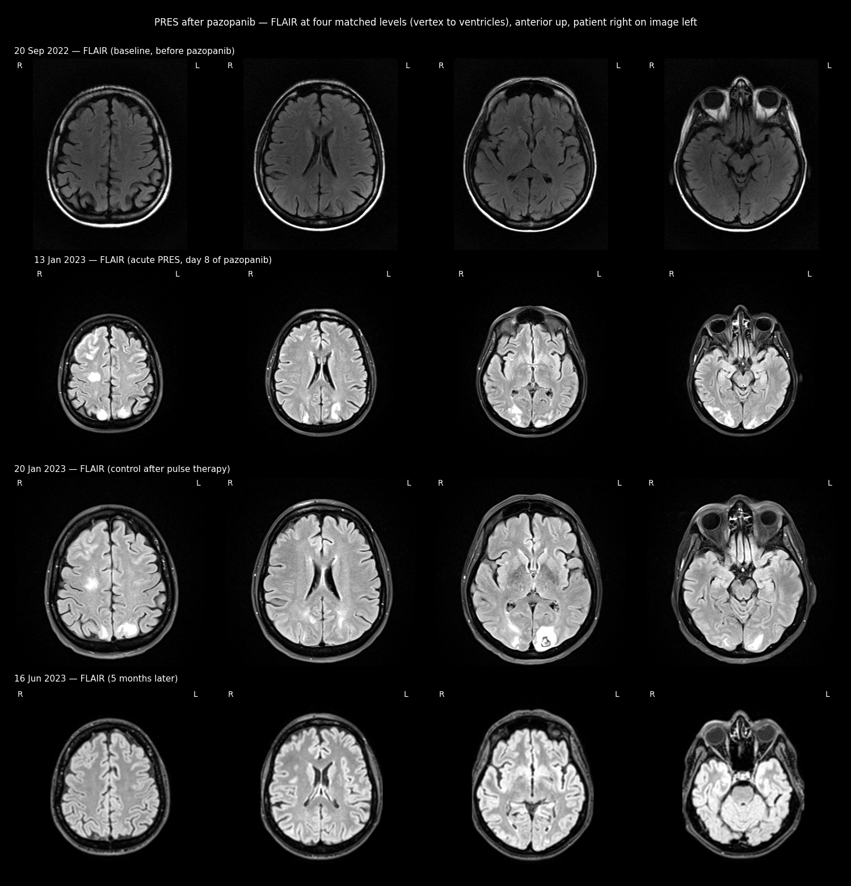
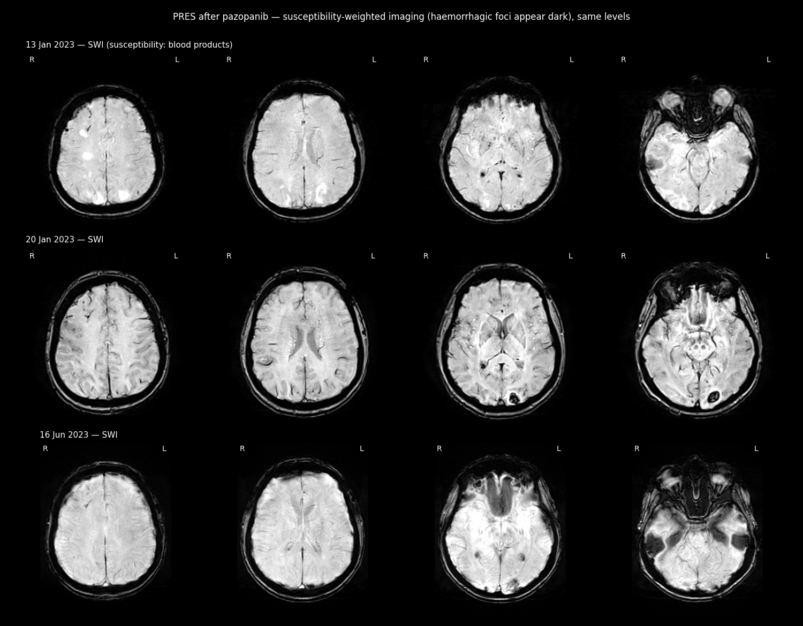
Imaging analysis of the 19.06.2026 PET-CT (10.09.2026)
The venous-phase contrast CT (2 mm) and the FDG PET of the 19.06.2026 study were fused with corrected DICOM geometry and reviewed slice by slice. Frame convention: RAS millimetres; images in radiological convention (anterior up, patient left on image right).
| Finding | Measurement (corrected frame) |
|---|---|
| Left-lobe lesion, CT (hypodense, 44 HU vs liver 98 HU) | segment II (83 %) / III (17 %); 46 × 48 × 42 mm; 27 mL; centre RAS (−54, 173, −1201) |
| FDG-active tumour (SUVmax 2.27, liver background 1.04, threshold 1.65) | 19 mL; about half inside the hypodense core, the rest isodense enhancing tissue on the medial (hilar) side and inferior pole |
| Left portal branch | in contact with the lesion (0.8 mm) and with the FDG-active part (0 mm); contact point RAS (−35, 164, −1200) |
| Other structures | IVC 31 mm; stomach 19 mm; heart 28 mm; lesion reaches the liver surface (depth 0–31 mm) |
| Second hottest focus | SUVmax 2.34 on the anterior rim of the right-lobe mass (the "peripheral uptake" in the report) |
| Bile ducts | not resolvable on CT (not dilated); the left hepatic duct runs in the same Glissonean sheath as the left portal branch, so it is within a few mm of the lesion |
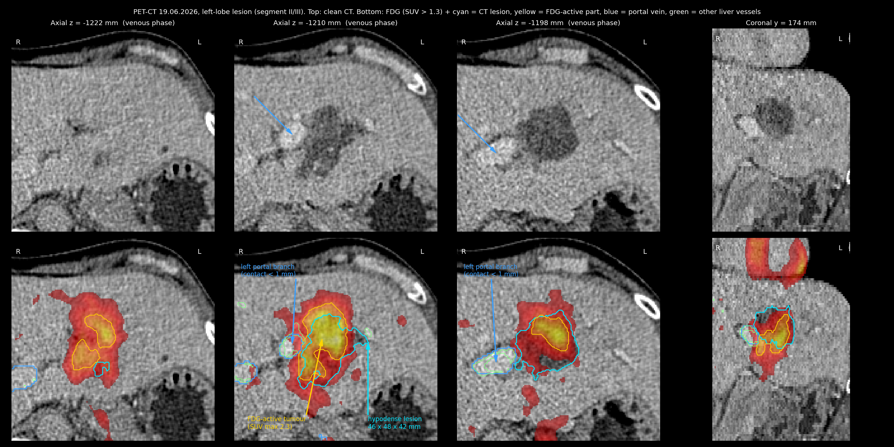
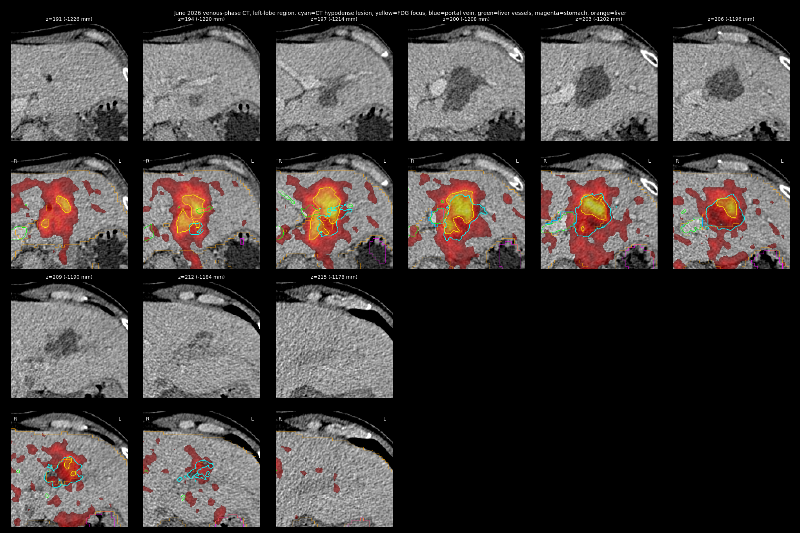
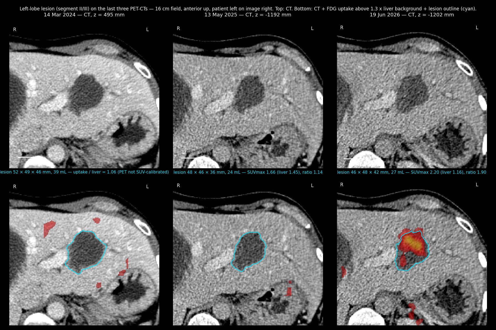
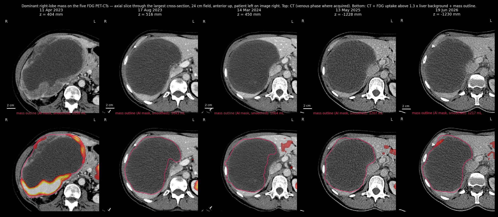
3D reconstruction
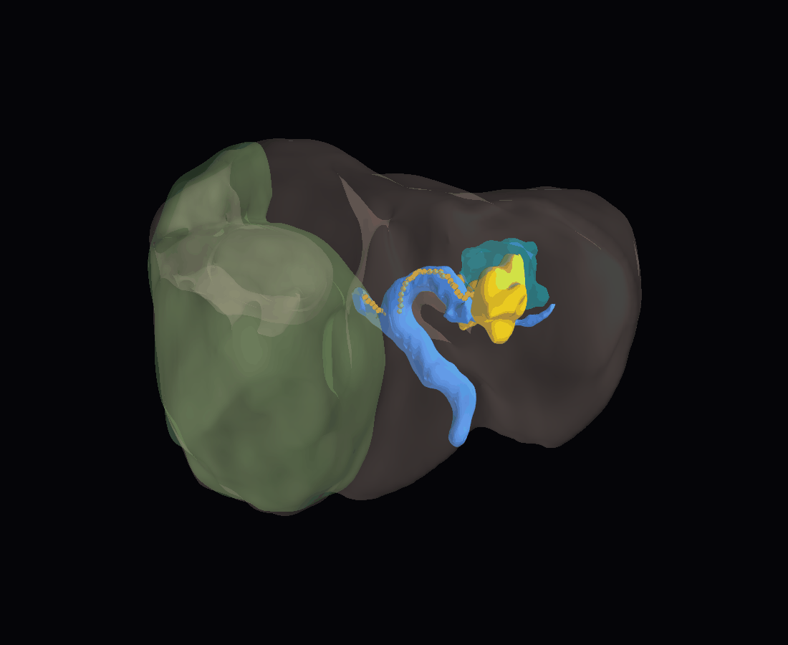
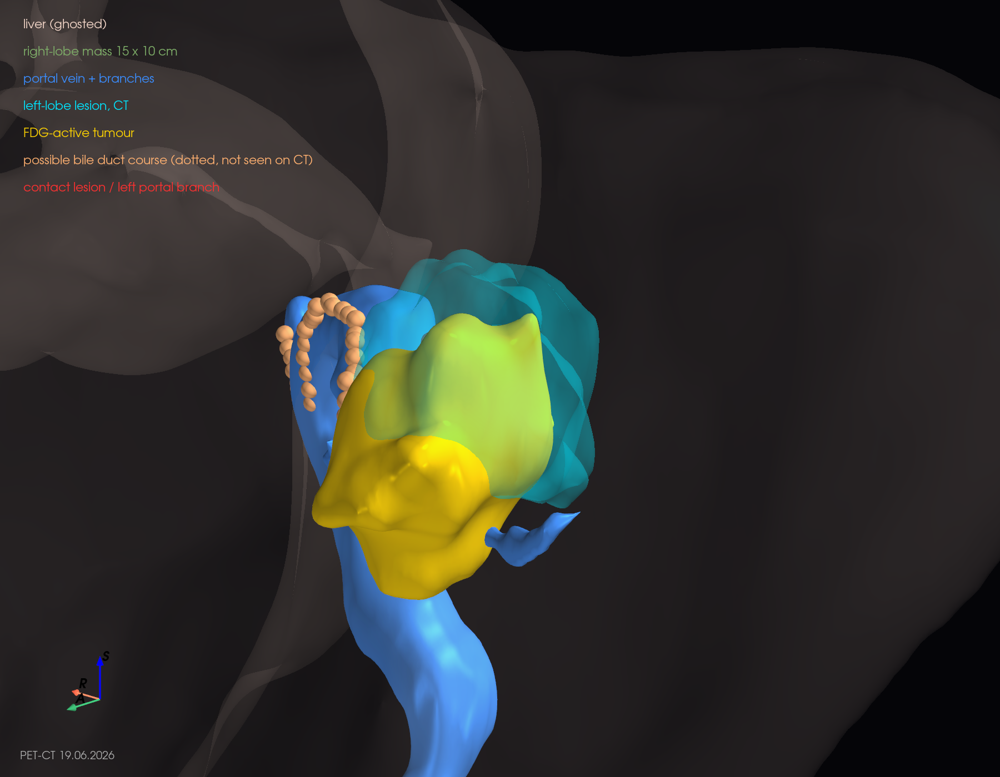
Slice-by-slice verification montages behind the 3D shapes
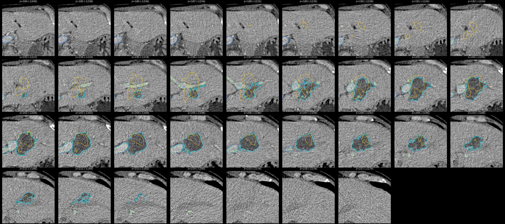
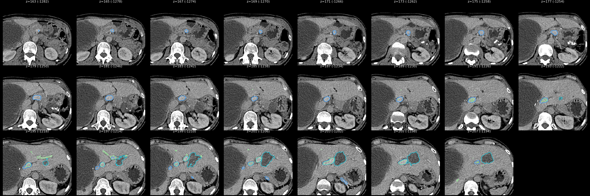
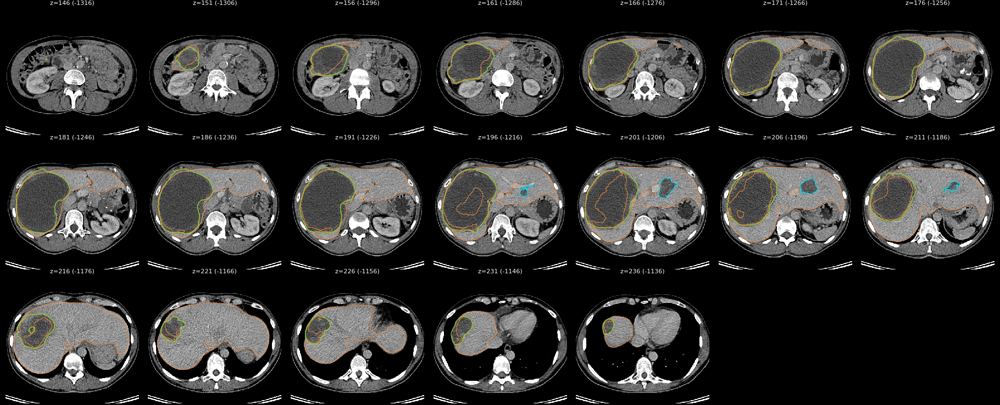
Interventional-radiology opinion (thermal ablation specialist, 10.09.2026, via messenger)
Thermal ablation (RFA, MWA) is contraindicated for this lesion because two contraindications coincide: proximity to the left branch of the portal vein and, most importantly, direct adjacency to the left bile duct. Y-90 radioembolisation (TARE) costs from about EUR 40,000 and is not performed in Ukraine (nor in Czechia or Slovakia) for that reason. The family's questions about transarterial therapies (DEB-TACE, TACE, TARE) and about surgical resection remain open.
Assessment against the imaging: consistent. The lesion abuts the left portal branch and the metabolically active tumour is exactly on that side, so an ablation margin would have to include the branch and the accompanying duct.
Evidence review (OpenEvidence conversation, 05.09.2026, 16 questions, 91 pages — PDF on Drive)
- Pattern: imatinib-refractory, liver-limited oligoprogression ("nodule within a mass") driven by polyclonal secondary KIT resistance; the exon-11 bulk disease still responds to imatinib. A combined local-plus-systemic strategy is favoured over simply switching TKI, and imatinib should continue throughout any local therapy (stopping the TKI collapses the benefit of ablation).
- Systemic options: sunitinib covers V654A but not A829P; regorafenib and ripretinib cover A829P and, per VOYAGER ctDNA data, regorafenib remains clinically reasonable against V654A; sorafenib has the broadest in-vitro coverage but only retrospective GIST data. Prior PRES with intracranial haemorrhage raises the stakes for potent VEGFR inhibitors (sunitinib, regorafenib); if one is used, start at a reduced dose with tight blood-pressure monitoring. Trial referral is recommended because no approved single agent covers the full profile.
- Liver-directed options for a viable nodule inside a cystic mass: arterially directed therapies (DEB-TACE/TACE, Y-90 TARE; NCCN 2A) treat only perfused tissue; microwave ablation (after cyst aspiration) or cryoablation for a few well-defined nodules; SBRT for a perivascular/central nodule that is unsafe for a probe; IRE is the vessel/duct-sparing alternative for a nodule abutting major vessels or central bile ducts (GIST data anecdotal); RFA is the least suited technique in fluid-containing targets.
- Timing: ablation planning needs multiphase CT or MRI no older than about 30 days; the June scan is stale and the 32 % ctDNA fraction argues for re-imaging now and definitive local therapy within roughly a month, provided the disease is still oligoprogressive.
- Not realistic now: mRNA neoantigen vaccines and TIL therapy (no GIST data, low TMB); checkpoint inhibitors alone give about 16 % response in TKI-refractory GIST.
- Other: the 31 mm lucent right femoral-head lesion mentioned in the 08.07.2026 LISOD read should be characterised (MRI) because extrahepatic disease changes the value of arterial therapies; the 08.09.2026 expert reading found no bone lesions.
Open questions for the tumour board
- Fresh multiphase liver MRI (± PET-CT) before any local therapy; is the disease still limited to the left-lobe lesion and the rim of the right-lobe mass?
- Given the contact with the left portal branch and duct: SBRT, IRE, or superselective DEB-TACE/TARE of the segment II/III feeding artery versus resection of the left lateral section (segments II–III), with imatinib continued.
- Systemic choice after local therapy (sunitinib as prescribed vs regorafenib vs ripretinib vs trial), weighed against the PRES history.
- Biopsy of the active nodule for tissue NGS to confirm the two resistance clones are in separate cells (trans).
All medical reports (docs_eng)
Every clinical report from the Drive archive, in chronological order, full text as translated/stored on Drive; each entry links to the document on Drive and to its original. Ukrainian-only documents carry an English summary. PET-CT report pages also show image sheets from the study and link to the DICOM disc.
PART 1 — Uterine leiomyosarcoma diagnosis, chemotherapy, pazopanib and PRES (August 2022 – April 2023)
- 2022-08-23 — CT scan of the abdomen and pelvis Imaging Drive original
- 2022-08-25 — MRI of the pelvis with contrast Imaging Drive original
- 2022-08-31 — Biopsy of liver metastasis Pathology Drive original 1 original 2 original 3
- 2022-08-31 — Tumour board conclusion Tumour board Drive original
- 2022-10-14 — MRI of the abdomen and pelvis Imaging Drive original 1 original 2
- 2022-11-15 — Treatment protocol (Gemcitabine + Docetaxel + Avastin) Treatment protocol Drive original 1 original 2
- 2022-12-01 — CT scan of the chest, abdomen and pelvis Imaging Drive original
- 2022-12-12 — Ultrasound examinations of 12 and 21 December 2022 Imaging Drive original 1 original 2
- 2022-12-15 — Oncomine genomic panel — sample 22OM011 (DNA/RNA) Genomics Drive original
- 2022-12-15 — Hereditary (germline) mutation panel — sample 22B104 Genomics Drive original
- 2023-01-04 — CT scan of the brain, chest, abdomen and pelvis Imaging Drive original
- 2023-01-04 — Oncologist protocol — pazopanib approved Oncology consultation Drive original
- 2023-01-13 — MRI of the brain (1.5 T) Imaging Drive original
- 2023-01-13 — MRI of the brain 13.01.2023 — second expert reading Imaging (second opinion) Drive original
- 2023-01-16 — Neurologist consultation Neurology Drive original
- 2023-01-18 — Genetic commentary on the Oncomine results (NCCN-based) Genomics Drive original
- 2023-01-20 — MRI and MR angiography of the brain (3 T) Imaging Drive original 1 original 2
- 2023-01-20 — MRI of the brain 20.01.2023 — second specialist reading Imaging (second opinion) Drive original
- 2023-01-23 — Neurologist advisory opinion (stroke centre) Neurology Drive original
- 2023-01-25 — Discharge summary (hospitalisation 13–25 January 2023, PRES) Discharge summary Drive original
- 2023-01-30 — Immunohistochemistry of the liver biopsy Pathology Drive original
- 2023-02-02 — Oncologist advisory opinion — Trabectedin proposed Oncology consultation Drive original
- 2023-02-06 — Teleconsultation report, Clinic for Gynecology Second opinion Drive original
- 2023-02-09 — Neuroradiology second opinion on the brain MRI scans Second opinion Drive original
- 2023-02-09 — CT scan protocol (comparison with 04.01.2023) Imaging Drive original
- 2023-02-13 — CT of the brain after a fall Imaging Drive original
- 2023-02-13 — Soft-tissue ultrasound of the forearm Imaging Drive original
- 2023-02-15 — Oncologist epicrisis after the first Trabectedin administration Discharge summary Drive original
- 2023-03-02 — Oncologist epicrisis after the second Trabectedin administration Discharge summary Drive original
- 2023-03-02 — Interdisciplinary oncological forum minutes and consultation Tumour board / second opinion Drive original
- 2023-03-09 — Personalised oncology tumour board Tumour board Drive original
- 2023-03-24 — Oncologist epicrisis after the third Trabectedin administration Discharge summary Drive original
- 2023-04-11 — PET-CT with FDG — radiological study Imaging Drive original
- 2023-04-19 — PET-CT revision — second medical opinion Imaging (second opinion) Drive original
- 2023-04-21 — Advisory conclusion, biopsy and recommendations Oncology consultation Drive
- 2023-04-21 — Endoscopic ultrasound-guided fine-needle aspiration (EUS-FNA) Endoscopy / pathology Drive
PART 2 — Diagnosis revised to GIST; imatinib (April 2023 – April 2024)
- 2023-04-21 — Pathohistological study of the abdominal mass (main tissue) Pathology Drive original
- 2023-04-26 — Pathohistological study of the liver metastasis Pathology Drive original
- 2023-05-03 — Interdisciplinary oncology conference conclusion Tumour board Drive original
- 2023-05-04 — Pathohistological reassessment of the first (August 2022) liver biopsy Pathology Drive original
- 2023-05-08 — Oncologist epicrisis — start of imatinib Discharge summary Drive original
- 2023-05-10 — Advisory conclusion (video consultation) Oncology consultation Drive original
- 2023-05-15 — Hospital discharge after the second week of imatinib Discharge summary Drive original
- 2023-05-31 — Revision of the MRI and CT of August 2022 (Dr. Zeltser) Imaging (second opinion) Drive original 1 original 2
- 2023-06-04 — Pathology report — revision of all three biopsy samples Pathology (second opinion) Drive original
- 2023-06-06 — Telemedicine consultation transcript, Dr. Ester Tahover Consultation transcript Drive original
- 2023-06-07 — Consultation report, Dr. Ester Tahover Oncology consultation Drive original
- 2023-06-13 — Oncologist advisory opinion Oncology consultation Drive original
- 2023-06-13 — Ultrasound of the abdominal cavity and retroperitoneal space Imaging Drive original
- 2023-06-16 — MRI of the brain (control after PRES) Imaging Drive original
- 2023-06-19 — Neurologist examination Neurology Drive original
- 2023-06-28 — CT consultation of the chest, abdomen and pelvis Imaging Drive original
- 2023-06-28 — CT consultation of the chest, abdomen and pelvis (second translation copy) Imaging Drive original
- 2023-07-19 — Physician letter (Arztbrief) after examination in Berlin Discharge summary / second opinion Drive original
- 2023-08-17 — PET-CT with FDG (comparison with 11.04.2023) Imaging Drive original
- 2024-03-14 — PET-CT with FDG (comparison with 17.08.2023 and 11.04.2023) Imaging Drive original
- 2024-03-25 — PET-CT revision — second medical opinion Imaging (second opinion) Drive original
- 2024-03-27 — Consultation report, Dr. Ester Tahover Oncology consultation Drive original 1 original 2
- 2024-04-02 — Gastroenterologist advisory opinion Consultation Drive original
- 2024-04-02 — Ultrasound of the abdominal organs and kidneys Imaging Drive original 1 original 2
PART 3 — Continued imatinib, progression in 2026, genomic profiling and second opinions (2025 – September 2026)
- 2025-03-19 — Oncologist consultation (Dr. M. Yermakov) — Ukrainian original Oncology consultation Drive
- 2025-05-13 — PET-CT with FDG (Feofaniya) — Ukrainian original Imaging Drive
- 2025-05-19 — Retrospective radiology analysis of the 13.05.2025 PET-CT (Dr. M. Novikov) — Ukrainian original Imaging Drive
- 2025-05-21 — Oncologist consultation (Dr. M. Yermakov) — Ukrainian original Oncology consultation Drive
- 2026-06-19 — PET-CT whole body with contrast enhancement — English translation Imaging Drive original
- 2026-07-08 — Retrospective radiology analysis of the 19.06.2026 PET-CT (Dr. M. Novikov) — English translation Imaging Drive original
- 2026-07-30 — Oncologist consultation — switch to sunitinib (Dr. M. Yermakov) — English translation Oncology consultation Drive original
- 2026-07-30 — Echocardiography before sunitinib — English translation Cardiology Drive original
- 2026-08-07 — Oncologist consultation (Dr. I. Kolachko) — English translation Oncology consultation Drive original
- 2026-08-30 — FoundationOne Liquid CDx genomic report (blood drawn 20.08.2026) — clinical summary Genomics Drive original
- 2026-09-08 — Expert opinion on the 19.06.2026 FDG PET-CT (Dr. V. Kulikova) — English translation Imaging (second opinion) Drive original
Documents not reproduced here
- Helios Privatklinik Berlin-Buch — preliminary cost and treatment offer, 26.05.2023 (German original + English translation)
- Helios Privatklinik Berlin-Buch — admission confirmation, June 2023 (German original + English translation)
- DMU Medical Experts — foreign-patient enquiry forms, July 2023
- MSEK disability determination packet, March 2023 (Ukrainian scan + English summary)
- Ministry of Health letter on disability status, 02.04.2025 (+ English translation)
- Laboratory results (blood, urine, biochemistry) 2022–2025
- Drug administration schedule (spreadsheet)
- OpenEvidence conversation archive, 05.09.2026 (91 pages)